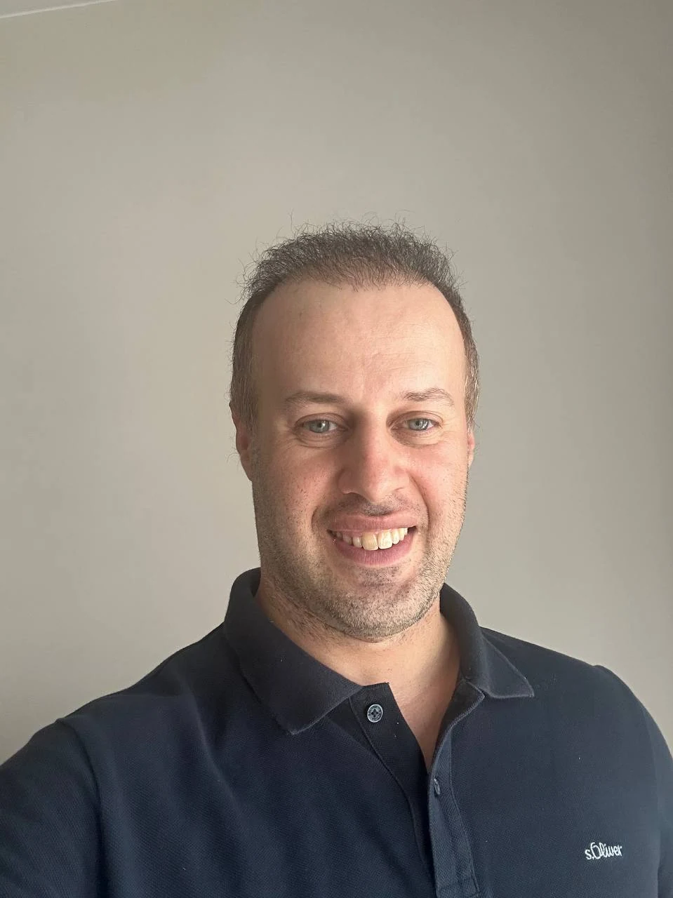
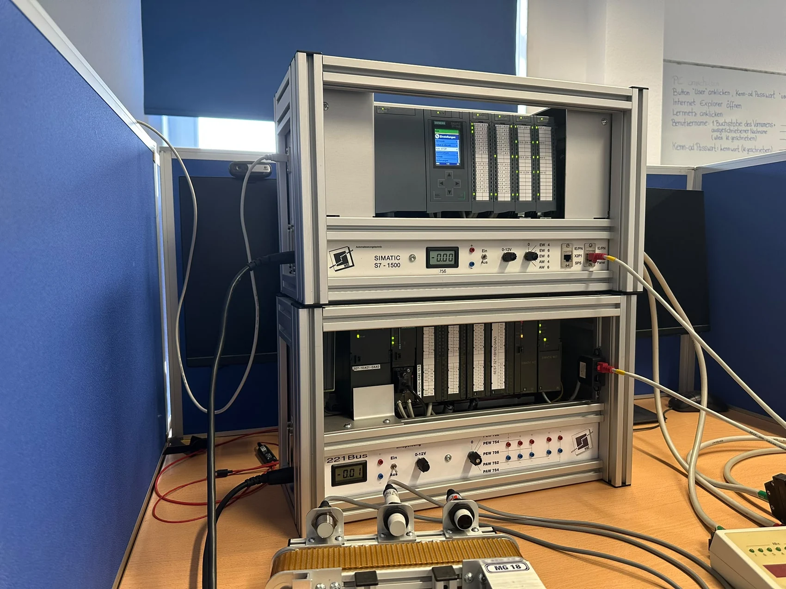

01 / 06
PLC Logic Development
Structured Siemens PLC logic for sequences, motor controls, timers, counters and interlocks.
LADFBDSCL
HELLO, I'M ALI SHEIKHOLESLAMIKANDELOSI
Electronics engineer with a systems-engineering background, focused on Siemens PLC programming, industrial automation and reliable control logic. I build, simulate, troubleshoot and document small-scale automation solutions.


Focused, practical support for well-defined PLC software tasks — from a logic block to a documented simulation.
Structured Siemens PLC logic for sequences, motor controls, timers, counters and interlocks.
Developing and refining small PLC programs with clear function blocks and readable architecture.
Checking sequences, inputs and outputs through reproducible software tests and simulations.
I/O assignments, functional descriptions, program walkthroughs and structured test records.
Software-focused investigation of faulty logic, incorrect signals and unexpected PLC behavior.
Online collaboration for reviewing PLC code, understanding requirements and debugging test logic.
A selection of technical exercises built with Siemens PLC concepts, logic development and functional testing.
Portfolio transparency: The projects below are training and demonstration exercises, not commissioned client projects or certified safety implementations.
Three-level occupancy counting with sensor signals, capacity limits, floor indication and timed display sequencing.
Timed signals, pedestrian requests and step-based transition logic.
Manual/automatic control, sensor conditions and motor interlocks.
Reading analog inputs and mapping values to motor-speed outputs.
Basic mode selection, start/stop, reset and simulated interlocks — not a safety-rated system.
I'm Ali Sheikholeslamikandelosi, an electronics engineer with a Master's degree in Electronics Engineering and professional experience in automotive systems engineering, diagnostics and technical integration.
My current focus is Siemens PLC programming, with hands-on training involving S7-300 and S7-1500, TIA Portal, motor controls, analog I/O and industrial networks. I approach every task with a focus on understandable logic, systematic testing and clear documentation.
Let's work togetherShare a short description of the control logic, programming or testing help you need. I'd be happy to discuss a clearly scoped project.